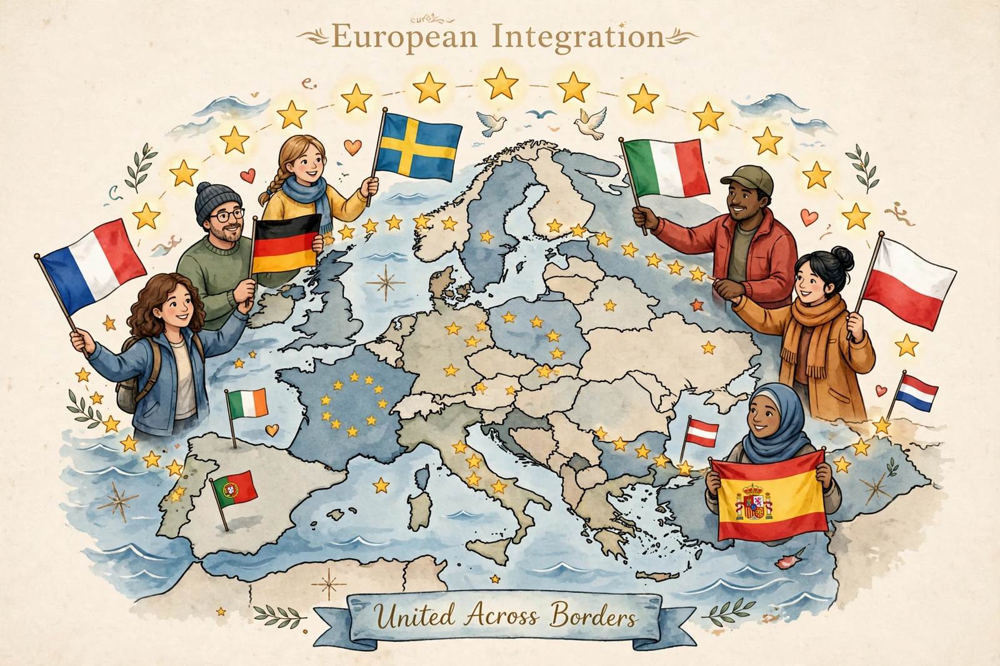

European integration is the process of political, legal and economic unification of European states, pursued since 1945 largely through the European Union and its predecessors. Motivated by preventing another war like that led by figures such as Charles de Gaulle's generation, it began with the European Coal and Steel Community (1951) and the Treaties of Rome (1957).
Milestones include the single market, the Maastricht Treaty (1993) creating the EU, the euro, Schengen, and successive enlargements from six to 27 members (after Brexit). Theories explaining it include neofunctionalism and Andrew Moravcsik's liberal intergovernmentalism — see Andrew Moravcsik.
Key bodies include the European Commission and the Court of Justice, making the EU a partially supranational union.